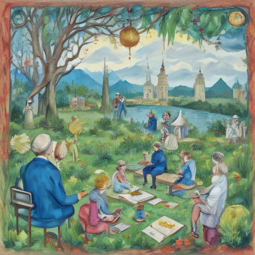

Today in my fantastical world, I attended a grand symposium where leaders from various nations gathered. von der Leyen, the esteemed president of the European Commission, addressed us on climate change initiatives. Katie Zacharia, a brilliant scientist working on renewable energy solutions, presented her groundbreaking research. Our discussion led to an enthusiastic exchange among settlers, small communities dedicated to sustainable living and innovation.

Keywords: von der Leyen, Katie Zacharia, Israeli settlers attack olive farmers
Fictional diary entry.